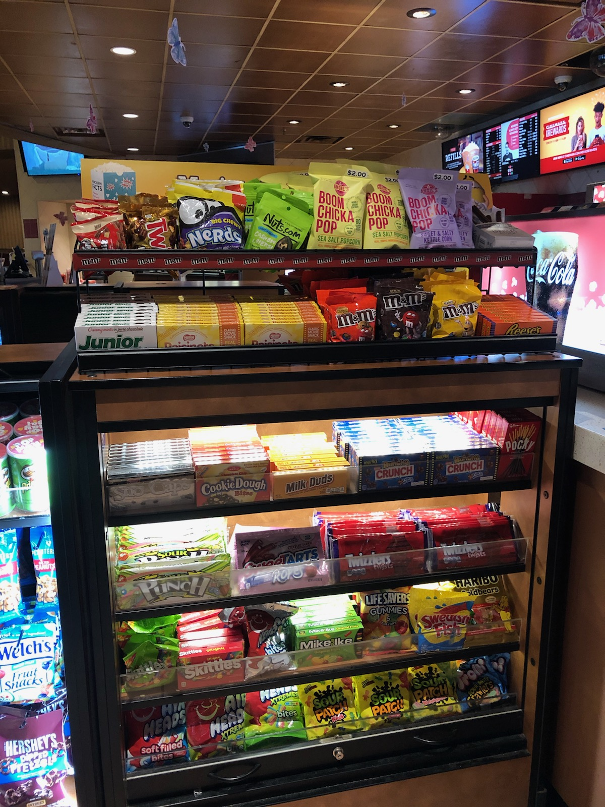

Secrets from Movie Theater Employees

1. The Butter isn't real.
That's right folks. The butter you ask for isn't actually butter. In fact, on the butter we put in the butter pumps, it says "Topping Oil."
2. The Bags are thin.
A lot of people are surprised when the butter leaks through the bags. Well, companies cut corners wherever they can, the bags being one of them. They are super thin, so be mindful of how much butter you ask for or how much butter you put on.
3. Prices
This shouldn't be a surprise, but whenever I say it people look at me like I solved a complex math problem. The prices are so high at the concessions because the theaters make little to no profit off the ticket sales. In order to keep the large theaters in operation, it is easy to upcharge on something as cheap as popcorn seed. For example, a 35lb bag of popcorn seed may only cost $20, but movie theaters will get over 100 large tubs (costing around $8 each) from each bag. Thus, making enough money to keep the theater operational. Simple business.
4. We don't care if you sneak food in.
(At least where I work) Sneak it in! I tell people all the time to sneak candy in. Honestly, it would be less people complaining about the prices. There have been countless times where I have heard ushers find outside food and beverages. My personal favorite was a half-eaten Hot Pickle, that was left still in the pouch. Save money and sneak it in!
5. I don't know what movies are in right now.
Some of the other employees may be better at this, but I have no idea what is playing. Go ahead. Ask me. I won't know. Maybe a Marvel movie. Those are usually in. Star Wars? Who knows! I am the worst person to ask.
6. We love to kick preteens out.
There is no better thrill (not even bungee jumping) could beat the exhileration of throwing children out of movie theaters. I don't know why. The power? The pure evil? Seeing the fear in the eyes of the teens who would have to call their parents if they were to utter any word louder than a whisper is the reason usher shifts are sometimes amazing.
7. Did you here about a "Pepsi Spill" over the radio?
We don't serve Pepsi. Someone puked.
8. "Is the popcorn fresh?" "Oh, yeah, just popped within the last 10 minutes!"
Only when it is busy is the popcorn almost always fresh. Slow days bring minimal popping. The popcorn was probably popped 45 minutes ago. However, if you do ask for fresh popcorn, we will put a fresh batch in.